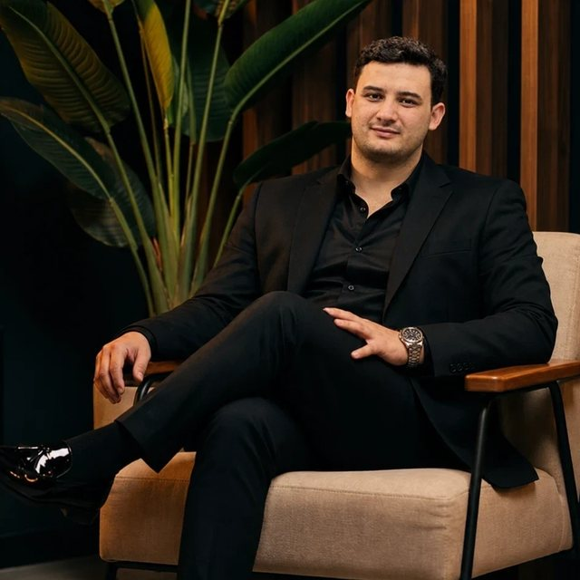
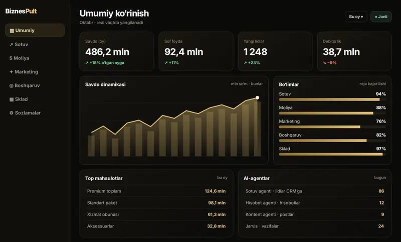
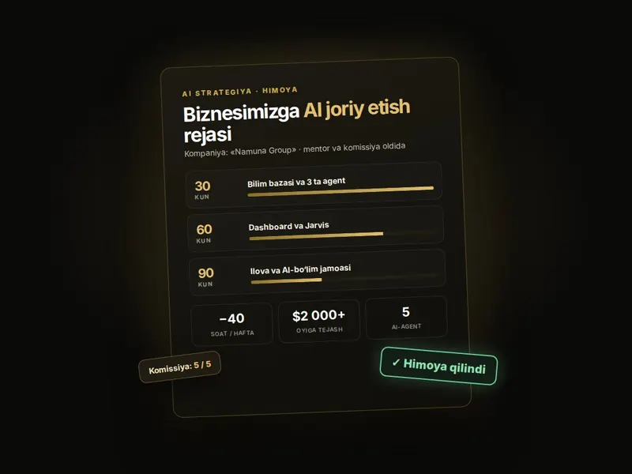

Sanoat filtratsiyasi
$10 000dasturiga taklif qilishdi
CRM ishonasizmi — men ikki kun uxlamasdan yozdim. Telefon ishladi.
Feruz XimmatovPhoenix Prime · zavod rahbari
Raqamingizni qoldiring — menejer 15 daqiqada qo‘ng‘iroq qiladi va biznesingizda AI qancha pul tejashini hisoblab beradi.
Bular — oddiy tadbirkorlar. Dasturchi emas. 6 hafta ichida o‘z bizneslarida AI-tizim qurishdi.
CRM ishonasizmi — men ikki kun uxlamasdan yozdim. Telefon ishladi.
Hisobotni operatordan 2 soat kutardik. Endi telefonda 30 soniyada ochaman.

700 truck chatini o‘qib bo‘lmasdi. Endi kimga qo‘ng‘iroq qilishni panel aytadi.
AI’ni faqat savol-javobga ishlatardim — bunchalik ko‘p funksiyasi borligini bilmasdim.
Endi qog‘oz yo‘q: HR kuniga 8 soat emas, 1 soat ishlaydi.
Endi mijoz hammasini botda o‘zi ko‘radi, javob 10 soniyada.
← surib ko‘ring →
Biznesingiz raqamlari asosida: qaysi xarajat va qaysi rutina AI’ga o‘tadi, oyiga necha dollar tejaladi.
Qaysi jarayonni birinchi avtomatlashtirish kerak — darhol natija beradigani bilan boshlaysiz.
Yolg‘iz o‘qish, jamoa bilan yoki tayyor tizim. Mos kelmasa — halol aytamiz.
Sotuv, kontent, hisobot va mijozlar bilan ishlaydigan agentlar.

Biznesingiz raqamlari bitta ekranda — hisobot kutmasdan.
Kompyuteringizda o‘zi ishlaydigan yordamchi — siz uxlaganda ham.

Ijrochidan strateggacha: endi boshqacha boshqarasiz.
Ha. O‘quvchilarimizning aksariyati — dasturchi emas, biznes egalari. Hamma narsa oddiy tilda, qadam-baqadam ko‘rsatiladi.
Ha, bepul. 30 daqiqa ichida biznesingizda AI qayerda pul tejashini hisoblab beramiz. Majburiyat yo‘q.
Narx formatga bog‘liq: yolg‘iz yoki jamoa bilan. Qo‘ng‘iroqda sizga mosini aytamiz — avval foydani hisoblaymiz, keyin narx haqida gaplashamiz.
Haftasiga 3–4 soat: jonli dars va amaliyot. Darslar yozib olinadi — o‘tkazib yuborsangiz ham ko‘rasiz.
Har hafta aniq natija bilan yakunlanadi: agentlar, dashboard, Jarvis. Kurator va yopiq chat har qadamda yordam beradi.